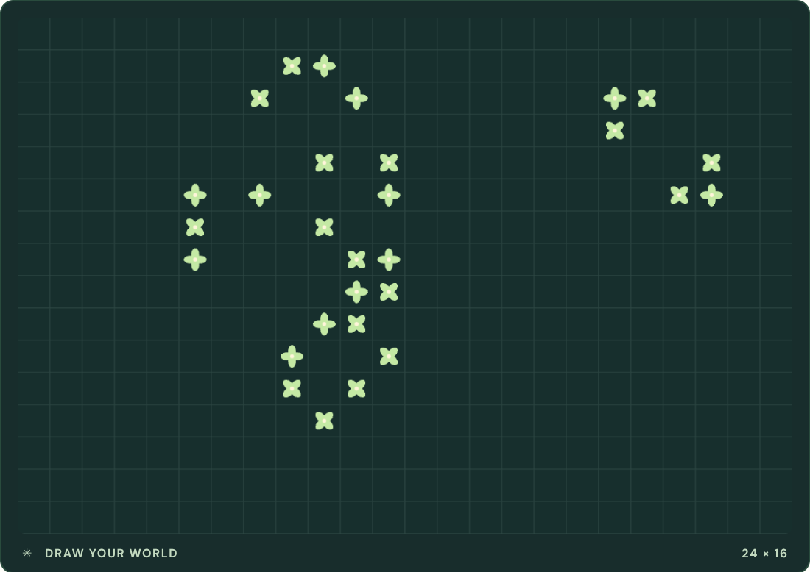

这些项目里，绝大部分代码是 AI 写的，儿子负责出想法、定方向、验收效果、把不对的地方说清楚——就这么循环。
SOURCE TEXT / 内容真源 · 第 03 关
③ 儿子的 AI 实验室
现在把镜头转向另一个方向：你儿子做的这些项目，全部是 AI 陪着写出来的。 不是"AI 给了一点点帮助"，而是 AI 写代码、儿子定方向，一个功能一个功能磨出来的。 你现在看的这个网站，也是同样做出来的。
他做的这些，AI 陪着一行一行写出来的。
台面上这一个可以现在就玩；旁边那张是它真的跑起来的样子，再往下是三件已经做完的作品。
先玩一个：算法实验室
- 生命画布
打开就是它。用画笔在画布上随手涂几笔，点 Play——涂过的地方会像细胞一样自己"生长"，画面上的 GENERATION / ALIVE 数字实时跳动，看得见它繁衍或消亡；
- 节拍制作器
找到节拍的格子，逐格点亮几个，编一小段节奏，点 Play loop 循环听效果；满意了还能导出成音频文件保存下来；
- 算法工作室
写一小段指令点运行，它会一步一步把"一列数字怎么排好队"画给你看——每一步都看得见。

↑ 真实界面截图：画布上这些会"生长"的图案，是随手涂几笔点 Play 长出来的
真实界面截图（程序实际运行画面，非手绘示意图）。
下面这个就是其中之一，整个程序塞在这一个网页文件里，已经装进这个网站了。它是儿子和 AI 一起做的"算法游乐场"——你现在就可以玩。怎么上手？照着下面三步点就行：
（如果下面区域是空的，往下滑一点等它加载；手机上也可以玩。）
内嵌打不开？直接双击文件夹里的 assets/embed/algorithm-lab-standalone.html。 点这里在新窗口打开 ↗
源码在 GitHub（联网时点开）：github.com/wsjgdg/stray_papers
再看三个"正经"的
乐谱识别器
拍一张乐谱照片，程序把上面的音符全部"读"出来，变成可编辑的数字乐谱。图像识别 + 音乐知识，两层 AI 技术叠在一起。
- 🎼 图像识别
- 🎵 音乐知识
科研文献挖掘助手
帮材料科学家读论文的工具：一个人一年读不完的文献量，AI 辅助筛出有用的那些。科学家的活，AI 已经能打下手了。
- 📚 文档理解
视觉分析网站
一个能"看"东西的网站——把图片交给它分析。AI 的眼睛，就是这么一步步教出来的。
- 👁️ 计算机视觉
这一关想让你记住的一句话
这些项目没有一个是"天才写出来的"。就是每天和 AI 聊：让它写，我来试，哪里不对说清楚，再让它改。这个方法，你已经会了——聊天谁不会呢？差的就是开始。下一关我们看看，这个方法能怎么帮你赚钱。
本页来源
四个仓库都能点开逐项核对；截图来自本页内嵌程序的真实运行画面。
| 来源 | 素材 | 状态 | 链接 |
|---|---|---|---|
| 来源23 | stray_papers（算法实验室等子项目入口）源码链接行；README 含各子项目入口 | 200 | github.com |
| 来源24 | score-transcriber（乐谱识别器）项目卡"乐谱识别器" | 200 | github.com |
| 来源25 | matlit-miner（科研文献挖掘助手）项目卡"科研文献挖掘助手" | 200 | github.com |
| 来源26 | spot-visual（视觉分析网站）项目卡"视觉分析网站" | 200 | github.com |